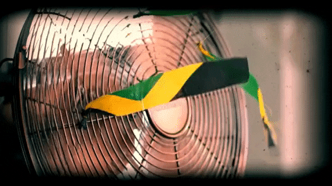

Kite flying in China dates back to several hundred years BC and slowly spread around the world. It is thought to be the earliest example of man-made flight. Leonardo da Vinci's 15th-century dream of flight found expression in several rational designs, but which relied on poor science.

Experiments with gliders provided the groundwork for heavier-than-air craft, most notably by Otto Lilienthal, and by the early 20th century, advances in engine technology and aerodynamics made controlled, powered flight possible for the first time.